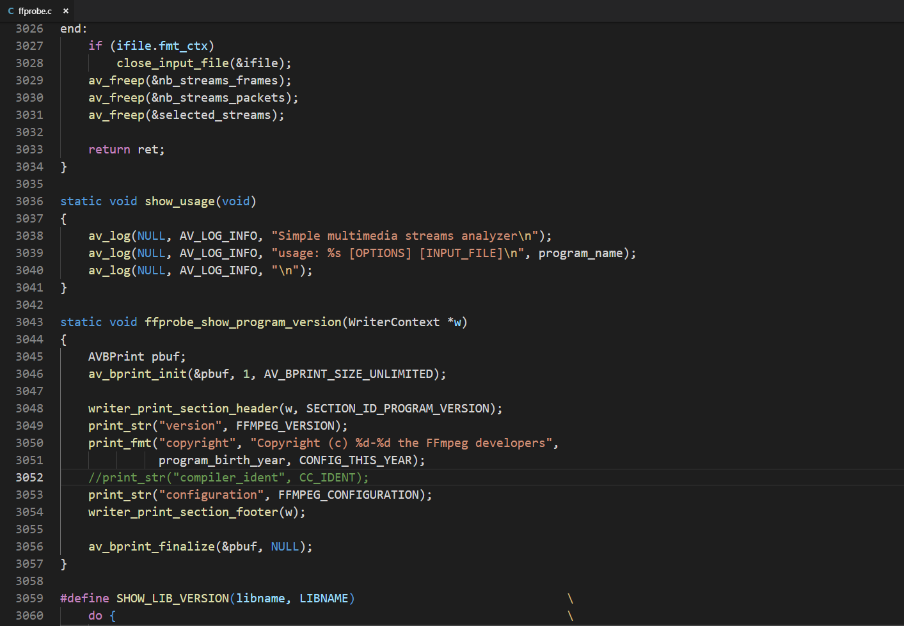

原文出处:本文由博客园博主gongluck提供。
原文连接:https://www.cnblogs.com/gongluck/p/10895947.html
原文连接:https://www.cnblogs.com/gongluck/p/10895947.html
0、下载TDM、msys和yasm
1、安装TDM-GCC-64
2、安装msys到TDM-GCC的安装目录中
3、将call "C:\Program Files (x86)\Microsoft Visual Studio\2019\Community\VC\Auxiliary\Build\vcvars32.bat"加到msys.bat的第一行中
4、复制yasm-1.3.0-win64.exe(重命名为yasm.exe)到msys的bin目录下
5、重命名msys的bin目录下的link.exe(linkold.exe)
6、运行msys.bat，进入到ffmpeg源码，执行
./configure --prefix=./msvc2019_32_shared --target-os=win32 --arch=x86 --toolchain=msvc --disable-static --enable-shared
make
make install

出现下图错误
打开fftools/cmdutils.c，注释第1149行
打开fftools/ffprobe.c，注释第3052行

重新执行make
没有错误后，执行make install安装
7、pdb文件没有自动打包，需要自己搜索
8、完成